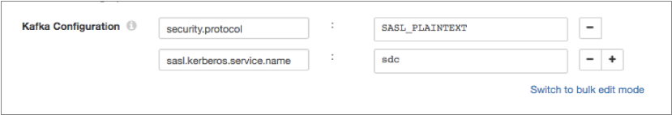

Kafka Producer
The Kafka Producer destination writes data to a Kafka cluster.
When you configure a Kafka Producer, you define connection information, the partition strategy, and data format to use. You can also configure Kafka Producer to determine the topic to write to at runtime.
The Kafka Producer passes data to partitions in the Kafka topic based on the partition strategy that you choose. You can optionally write a batch of records to the Kafka cluster as a single message.
You can add additional Kafka configuration properties as needed. You can also configure the origin to use Kafka security features.
You can configure the Kafka Producer to work with the Confluent Schema Registry. The Confluent Schema Registry is a distributed storage layer for Avro schemas which uses Kafka as its underlying storage mechanism.
Broker List
The Kafka Producer connects to Kafka based on the topic and associated brokers that you specify. To ensure a connection in case a specified broker goes down, list as many brokers as possible.
Runtime Topic Resolution
Kafka Producer can write a record to the topic based on an expression. When Kafka Producer evaluates a record, it calculates the expression based on record values and writes the record to the resulting topic.
When performing runtime topic resolution, Kafka Producer can write to any topic by default. You can create a white list of topics to limit the number of topics Kafka Producer attempts to use. When you create a white list, any record that resolves to an unlisted topic is sent to the stage for error handling. Use a white list when record data might resolve to invalid topic names.
Partition Strategy
The partition strategy determines how to write data to Kafka partitions. You can use a partition strategy to balance the work load or to write data semantically.
- Round-Robin
- Writes each record to a different partition using a cyclical order. Use for load balancing.
- Random
- Writes each record to a different partition using a random order. Use for load balancing.
- Expression
- Writes each record to a partition based on the results of the partition expression. Use to perform semantic partitioning.
- Default
- Writes each record using the default partition strategy that Kafka provides.
Additional Kafka Properties
You can add custom Kafka configuration properties to the Kafka Producer destination.
When you add a Kafka configuration property, enter the exact property name and the value. The stage does not validate the property names or values.
Several properties are defined by default, you can edit or remove the properties as necessary.
- key.serializer.class
- metadata.broker.list
- partitioner.class
- producer.type
- serializer.class
Enabling Security
You can configure the Kafka Producer to connect securely to Kafka through SSL/TLS, Kerberos, or both.
Enabling SSL/TLS
Perform the following steps to enable the Kafka Producer to use SSL/TLS to connect to Kafka. You can use the same steps to configure a Kafka Consumer.
- To use SSL/TLS to connect, first make sure Kafka is configured for SSL/TLS as described in the Kafka documentation.
- On the General tab of the stage, set the Stage Library property to the appropriate Apache Kafka version.
- On the Kafka tab, add the security.protocol Kafka configuration property and set it to SSL.
- Then add and configure the following SSL Kafka
properties:
- ssl.truststore.location
- ssl.truststore.password
When the Kafka broker requires client authentication - when the ssl.client.auth broker property is set to "required" - add and configure the following properties:- ssl.keystore.location
- ssl.keystore.password
- ssl.key.password
Some brokers might require adding the following properties as well:- ssl.enabled.protocols
- ssl.truststore.type
- ssl.keystore.type
For details about these properties, see the Kafka documentation.
For example, the following properties allow the stage to use SSL/TLS to connect to Kafka with client authentication:

Enabling Kerberos (SASL)
When you use Kerberos authentication, Data Collector uses the Kerberos principal and keytab to connect to Kafka. Perform the following steps to enable the Kafka Producer destination to use Kerberos to connect to Kafka.
- To use Kerberos, first make sure Kafka is configured for Kerberos as described in the Kafka documentation.
- Make sure that Kerberos authentication is enabled for Data Collector, as described in Kerberos Authentication.
- Add the Java Authentication and Authorization
Service (JAAS) configuration properties required for Kafka clients based on your
installation and authentication type:
- RPM, tarball, or Cloudera Manager installation without LDAP
authentication - If Data Collector does
not use LDAP authentication, create a separate JAAS configuration file
on the Data Collector
machine. Add the following
KafkaClientlogin section to the file:KafkaClient { com.sun.security.auth.module.Krb5LoginModule required useKeyTab=true keyTab="<keytab path>" principal="<principal name>/<host name>@<realm>"; };For example:KafkaClient { com.sun.security.auth.module.Krb5LoginModule required useKeyTab=true keyTab="/etc/security/keytabs/sdc.keytab" principal="sdc/sdc-01.streamsets.net@EXAMPLE.COM"; };Then modify the SDC_JAVA_OPTS environment variable to include the following option that defines the path to the JAAS configuration file:-Djava.security.auth.login.config=<JAAS config path>Modify environment variables using the method required by your installation type.
- RPM or tarball installation with LDAP
authentication - If LDAP authentication is enabled in an
RPM or tarball installation, add the properties to the JAAS
configuration file used by Data Collector - the
$SDC_CONF/ldap-login.conffile. Add the followingKafkaClientlogin section to the end of theldap-login.conffile:KafkaClient { com.sun.security.auth.module.Krb5LoginModule required useKeyTab=true keyTab="<keytab path>" principal="<principal name>/<host name>@<realm>"; };For example:KafkaClient { com.sun.security.auth.module.Krb5LoginModule required useKeyTab=true keyTab="/etc/security/keytabs/sdc.keytab" principal="sdc/sdc-01.streamsets.net@EXAMPLE.COM"; }; - Cloudera Manager installation with LDAP
authentication - If LDAP authentication is enabled in a
Cloudera Manager installation, enable the LDAP Config File Substitutions
(ldap.login.file.allow.substitutions) property for the StreamSets
service in Cloudera Manager.
If the Use Safety Valve to Edit LDAP Information (use.ldap.login.file) property is enabled and LDAP authentication is configured in the Data Collector Advanced Configuration Snippet (Safety Valve) for ldap-login.conf field, then add the JAAS configuration properties to the same ldap-login.conf safety valve.
If LDAP authentication is configured through the LDAP properties rather than the ldap-login.conf safety value, add the JAAS configuration properties to the Data Collector Advanced Configuration Snippet (Safety Valve) for generated-ldap-login-append.conf field.
Add the following
KafkaClientlogin section to the appropriate field as follows:KafkaClient { com.sun.security.auth.module.Krb5LoginModule required useKeyTab=true keyTab="_KEYTAB_PATH" principal="<principal name>/_HOST@<realm>"; };For example:KafkaClient { com.sun.security.auth.module.Krb5LoginModule required useKeyTab=true keyTab="_KEYTAB_PATH" principal="sdc/_HOST@EXAMPLE.COM"; };Cloudera Manager generates the appropriate keytab path and host name.
- RPM, tarball, or Cloudera Manager installation without LDAP
authentication - If Data Collector does
not use LDAP authentication, create a separate JAAS configuration file
on the Data Collector
machine. Add the following
- On the General tab of the stage, set the Stage Library property to the appropriate Apache Kafka version.
- On the Kafka tab, add the security.protocol Kafka configuration property, and set it to SASL_PLAINTEXT.
- Then, add the sasl.kerberos.service.name configuration property, and set it to kafka.
For example, the following Kafka properties enable connecting to Kafka with Kerberos:

Enabling SSL/TLS and Kerberos
You can enable Kafka Producer to use SSL/TLS and Kerberos to connect to Kafka.
- Make sure Kafka is configured to use SSL/TLS and Kerberos (SASL) as described in the following Kafka documentation:
- Make sure that Kerberos authentication is enabled for Data Collector, as described in Kerberos Authentication.
- Add the Java Authentication and Authorization
Service (JAAS) configuration properties required for Kafka clients based on your
installation and authentication type:
- RPM, tarball, or Cloudera Manager installation without LDAP
authentication - If Data Collector does
not use LDAP authentication, create a separate JAAS configuration file
on the Data Collector
machine. Add the following
KafkaClientlogin section to the file:KafkaClient { com.sun.security.auth.module.Krb5LoginModule required useKeyTab=true keyTab="<keytab path>" principal="<principal name>/<host name>@<realm>"; };For example:KafkaClient { com.sun.security.auth.module.Krb5LoginModule required useKeyTab=true keyTab="/etc/security/keytabs/sdc.keytab" principal="sdc/sdc-01.streamsets.net@EXAMPLE.COM"; };Then modify the SDC_JAVA_OPTS environment variable to include the following option that defines the path to the JAAS configuration file:-Djava.security.auth.login.config=<JAAS config path>Modify environment variables using the method required by your installation type.
- RPM or tarball installation with LDAP
authentication - If LDAP authentication is enabled in an
RPM or tarball installation, add the properties to the JAAS
configuration file used by Data Collector - the
$SDC_CONF/ldap-login.conffile. Add the followingKafkaClientlogin section to the end of theldap-login.conffile:KafkaClient { com.sun.security.auth.module.Krb5LoginModule required useKeyTab=true keyTab="<keytab path>" principal="<principal name>/<host name>@<realm>"; };For example:KafkaClient { com.sun.security.auth.module.Krb5LoginModule required useKeyTab=true keyTab="/etc/security/keytabs/sdc.keytab" principal="sdc/sdc-01.streamsets.net@EXAMPLE.COM"; }; - Cloudera Manager installation with LDAP
authentication - If LDAP authentication is enabled in a
Cloudera Manager installation, enable the LDAP Config File Substitutions
(ldap.login.file.allow.substitutions) property for the StreamSets
service in Cloudera Manager.
If the Use Safety Valve to Edit LDAP Information (use.ldap.login.file) property is enabled and LDAP authentication is configured in the Data Collector Advanced Configuration Snippet (Safety Valve) for ldap-login.conf field, then add the JAAS configuration properties to the same ldap-login.conf safety valve.
If LDAP authentication is configured through the LDAP properties rather than the ldap-login.conf safety value, add the JAAS configuration properties to the Data Collector Advanced Configuration Snippet (Safety Valve) for generated-ldap-login-append.conf field.
Add the following
KafkaClientlogin section to the appropriate field as follows:KafkaClient { com.sun.security.auth.module.Krb5LoginModule required useKeyTab=true keyTab="_KEYTAB_PATH" principal="<principal name>/_HOST@<realm>"; };For example:KafkaClient { com.sun.security.auth.module.Krb5LoginModule required useKeyTab=true keyTab="_KEYTAB_PATH" principal="sdc/_HOST@EXAMPLE.COM"; };Cloudera Manager generates the appropriate keytab path and host name.
- RPM, tarball, or Cloudera Manager installation without LDAP
authentication - If Data Collector does
not use LDAP authentication, create a separate JAAS configuration file
on the Data Collector
machine. Add the following
- On the General tab of the stage, set the Stage Library property to the appropriate Apache Kafka version.
- On the Kafka tab, add the security.protocol property and set it to SASL_SSL.
- Then, add the sasl.kerberos.service.name configuration property, and set it to kafka.
- Then add and configure the following SSL Kafka
properties:
- ssl.truststore.location
- ssl.truststore.password
When the Kafka broker requires client authentication - when the ssl.client.auth broker property is set to "required" - add and configure the following properties:- ssl.keystore.location
- ssl.keystore.password
- ssl.key.password
Some brokers might require adding the following properties as well:- ssl.enabled.protocols
- ssl.truststore.type
- ssl.keystore.type
For details about these properties, see the Kafka documentation.
Data Formats
- Avro
- The destination writes records based on the Avro schema.
- Binary
- The destination writes binary data from a single field in the record.
- Delimited
- The destination writes records as delimited data. When you use this data format, the root field must be list or list-map.
- JSON
- The destination writes records as JSON data. You can use one of
the following formats:
- Array - Each file includes a single array. In the array, each element is a JSON representation of each record.
- Multiple objects - Each file includes multiple JSON objects. Each object is a JSON representation of a record.
- Protobuf
- Writes one record in a message. Uses the user-defined message type and the definition of the message type in the descriptor file to generate the message.
- SDC Record
- The destination writes records in the SDC Record data format.
- Text
- The destination writes data from a single text field to the destination system. When you configure the stage, you select the field to use. When necessary, merge record data into the field earlier in the pipeline.
- XML
- The destination creates a valid XML document for each record. The
destination requires the record to have a single root field that
contains the rest of the record data. For details and
suggestions for how to accomplish this, see Record Structure Requirement.
The destination can include indentation to produce human-readable documents. It can also validate that the generated XML conforms to the specified schema definition. Records with invalid schemas are handled based on the error handling configured for the destination.
Configuring a Kafka Producer
Configure a Kafka Producer to write data to a Kafka cluster.
-
In the Properties panel, on the General tab, configure the
following properties:
General Property Description Name Stage name. Description Optional description. Stage Library Library version that you want to use. Required Fields 
Fields that must include data for the record to be passed into the stage. Tip: You might include fields that the stage uses.Records that do not include all required fields are processed based on the error handling configured for the pipeline.
Preconditions Conditions that must evaluate to TRUE to allow a record to enter the stage for processing. Click Add to create additional preconditions. Records that do not meet all preconditions are processed based on the error handling configured for the stage.
On Record Error Error record handling for the stage: - Discard - Discards the record.
- Send to Error - Sends the record to the pipeline for error handling.
- Stop Pipeline - Stops the pipeline.
-
On the Kafka tab, configure the following
properties:
Kafka Properties Description Broker URI Connection string for the Kafka broker. Use the following format: <host>:<port>.To ensure a connection, enter a comma-separated list of additional broker URI.
Runtime Topic Resolution
Evaluates an expression at runtime to determine the topic to use for each record. Topic Topic to use. Not available when using runtime topic resolution.
Topic Expression Expression used to determine where each record is written when using runtime topic resolution. Use an expression that evaluates to a topic name. Topic White List List of valid topic names to write to when using runtime topic resolution. Use to avoid writing to invalid topics. Records that resolve to invalid topic names are passed to the stage for error handling. Use an asterisk (*) to allow writing to any topic name. By default, all topic names are valid.
Partition Strategy Strategy to use to write to partitions: - Round Robin - Takes turns writing to different partitions.
- Random - Writes to partitions randomly.
- Expression - Uses an expression to write data to different partitions. Writes records to the partitions specified by the results of the expression.
- Default - Uses an expression to extract a partition key from the record. Writes records to partitions based on a hash of the partition key.
Partition Expression Expression to use with the default or expression partition strategy. When using the default partition strategy, specify an expression that returns the partition key from the record. The expression must evaluate to a string value.
When using the expression partition strategy, specify an expression that evaluates to the partition where you want each record written. Partition numbers start with 0. The expression must evaluate to a numeric value.
Optionally, click Ctrl + Space Bar for help with creating the expression.
One Message per Batch For each batch, writes the records to each partition as a single message. Kafka Configuration Additional Kafka properties to use. Using simple or bulk edit mode, click the Add icon and define the Kafka property name and value. Use the property names and values as expected by Kafka. Do not use the broker.list property.
For information about enabling secure connections to Kafka, see Enabling Security.
Key Serializer Method used to serialize the Kafka message key when the configured data format is Avro. Set to Confluent to embed the Avro schema ID in each message that Kafka Producer writes.
Value Serializer Method used to serialize the Kafka message value when the configured data format is Avro. Set to Confluent to embed the Avro schema ID in each message that Kafka Producer writes.
-
On the Data Format tab, configure the following
property:
Data Format Property Description Data Format Data format for messages: - Avro
- Binary
- Delimited
- JSON
- Protobuf
- SDC Record

- Text
- XML
-
For Avro data, on the Data Format tab, configure the
following properties:
Avro Property Description Avro Schema Location Location of the Avro schema definition to use when writing data: - In Pipeline Configuration - Use the schema that you provide in the stage configuration.
- In Record Header - Use the schema in the avroSchema
record header attribute. Use only when the
avroSchema attribute is defined for all records.
- Confluent Schema Registry - Retrieve the schema from the Confluent Schema Registry.
Avro Schema Avro schema definition used to write the data. You can optionally use the runtime:loadResource function to use a schema definition stored in a runtime resource file.
Register Schema Select to register a new Avro schema with the Confluent Schema Registry. Schema Registry URLs Confluent Schema Registry URLs used to look up the schema or to register a new schema. To add a URL, click Add. Use the following format to enter the URL: http://<host name>:<port number>Look Up Schema By Method used to look up the schema in the Confluent Schema Registry: - Subject - Look up the specified Avro schema subject.
- Schema ID - Look up the specified Avro schema ID.
Schema Subject Avro schema subject to look up or to register in the Confluent Schema Registry. If the specified subject to look up has multiple schema versions, the origin uses the latest schema version for that subject. To use an older version, find the corresponding schema ID, and then set the Look Up Schema By property to Schema ID.
Schema ID Avro schema ID to look up in the Confluent Schema Registry. Include Schema Includes the schema in each message. Note: If you configured Kafka Producer to embed the Avro schema ID in each message that it writes, clear this property.Avro Compression Codec The Avro compression type to use. When using Avro compression, do not enable other compression available in the destination.